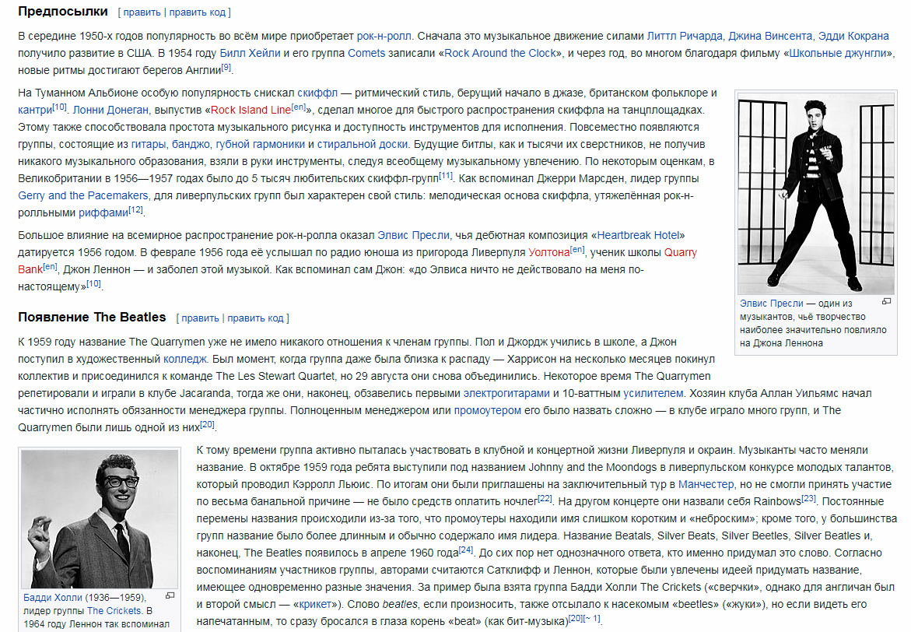

Плавающие элементы
Денис Завгородний Руководитель frontend-отдела, ведущий веб-технолог
Руководитель frontend-отдела, ведущий веб-технолог в AlterEGO
Если открыть любую статью в Wikipedia, там почти наверняка будут небольшие фотографии слева и справа от текста.
Эти фотографии с прилагающимися к ним описаниями и есть плавающие элементы.
Чтобы сделать элемент плавающим, нужно задать для него свойство float.
Свойство принимает следующие значения:
float: left; — элемент будет придвинут к левому краю;float: right; — элемент сдвинется к правому краю;float: none; — элемент останется на месте.Заметьте! Плавающих элементов по умолчанию не существует.
Блочные элементы располагаются на странице друг за другом сверху вниз.
Элемент, размещённый в верху кода, отобразится раньше элемента, расположенного в коде ниже.
Этот порядок следования называется потоком документа.
Если задать элементу свойство float, он вынимается из потока.
Элемент сдвигается влево или вправо до тех пор, пока не коснётся границ родителя или другого элемента с float.
При этом оставшиеся в потоке блочные элементы не видят элемент, которому задан float, и ведут себя так, как будто его вовсе нет.
Знают о плавающем элементе только строки (inline-элементы) и обтекают его по сторонам.
Рассмотрим как работает свойство на примере.
В небольшой текст добавим обычное изображение:
p {
background-color: yellowgreen;
}
img {
opacity: 0.5;
}
Параграфам зададим фоновый цвет, чтобы их размеры и границы были очевидны. Изображение сделаем полупрозрачным (opacity: 0.5;), чтобы было видно, что происходит под ним.
Результат ожидаемый, сначала идет картинка, ниже текст:
Falcon 9 — семейство одноразовых и частично многоразовых ракет-носителей тяжёлого класса серии Falcon американской компании SpaceX.
Falcon 9 состоит из двух ступеней и использует в качестве компонентов топлива керосин марки RP-1 (горючее) и жидкий кислород (окислитель). Цифра «9» в названии обозначает количество жидкостных ракетных двигателей Merlin, установленных на первой ступени ракеты-носителя.
Добавляем float к изображению:
img {
float: left;
}
Результат:
Falcon 9 — семейство одноразовых и частично многоразовых ракет-носителей тяжёлого класса серии Falcon американской компании SpaceX.
Falcon 9 состоит из двух ступеней и использует в качестве компонентов топлива керосин марки RP-1 (горючее) и жидкий кислород (окислитель). Цифра «9» в названии обозначает количество жидкостных ракетных двигателей Merlin, установленных на первой ступени ракеты-носителя.
Если задать float: right;, произойдет всё то же самое, только изображение будет сдвинуто вправо.
Картинки часто сопровождаются описаниями, которые расположены прямо под ними.
Это плавающая картинка и её описание.
Получается, что сделать плавающей только картинку уже недостаточно, описание должно выниматься из потока вместе с ней.
И это возможно!
Свойство float можно задать любому элементу, не только картинке.
Подготовим разметку — картинку и относящийся к ней текст поместим внутрь div с классом description:
И добавляем float:
.description {
float: right;
}
Результат:
Ракета на стартовой площадке
Falcon 9 — семейство одноразовых и частично многоразовых ракет-носителей тяжёлого класса серии Falcon американской компании SpaceX.
Falcon 9 состоит из двух ступеней и использует в качестве компонентов топлива керосин марки RP-1 (горючее) и жидкий кислород (окислитель). Цифра «9» в названии обозначает количество жидкостных ракетных двигателей Merlin, установленных на первой ступени ракеты-носителя.
То, что нужно. Можно добавить немного стилей для красоты:
.description {
float: right;
padding: 10px;
font-size: 10px;
background-color: black;
}
.description p {
font-size: 10px;
font-style: italic;
color: white;
}
Результат:
Ракета на стартовой площадке
Falcon 9 — семейство одноразовых и частично многоразовых ракет-носителей тяжёлого класса серии Falcon американской компании SpaceX.
Falcon 9 состоит из двух ступеней и использует в качестве компонентов топлива керосин марки RP-1 (горючее) и жидкий кислород (окислитель). Цифра «9» в названии обозначает количество жидкостных ракетных двигателей Merlin, установленных на первой ступени ракеты-носителя.
Давайте добавим ещё одну картинку с описанием и немного текста:
Ожидание:
Ракета на стартовой площадке
Falcon 9 — семейство одноразовых и частично многоразовых ракет-носителей тяжёлого класса серии Falcon американской компании SpaceX.
Титановые рули
Falcon 9 состоит из двух ступеней и использует в качестве компонентов топлива керосин марки RP-1 (горючее) и жидкий кислород (окислитель). Цифра «9» в названии обозначает количество жидкостных ракетных двигателей Merlin, установленных на первой ступени ракеты-носителя.
На ракете устанавливаются складные решетчатые рули для стабилизации вращения и улучшения управляемости на этапе снижения, особенно в то время, когда двигатели будут отключены (в целях снижения массы, для рулей использовалась незамкнутая гидравлическая система, не требующая тяжелых насосов высокого давления). Позже гидравлическая система была улучшена до замкнутой, а алюминиевые рули заменены на титановые, что упростит многоразовое использование.
Реальность:
Ракета на стартовой площадке
Falcon 9 — семейство одноразовых и частично многоразовых ракет-носителей тяжёлого класса серии Falcon американской компании SpaceX.
Титановые рули
Falcon 9 состоит из двух ступеней и использует в качестве компонентов топлива керосин марки RP-1 (горючее) и жидкий кислород (окислитель). Цифра «9» в названии обозначает количество жидкостных ракетных двигателей Merlin, установленных на первой ступени ракеты-носителя.
На ракете устанавливаются складные решетчатые рули для стабилизации вращения и улучшения управляемости на этапе снижения, особенно в то время, когда двигатели будут отключены (в целях снижения массы, для рулей использовалась незамкнутая гидравлическая система, не требующая тяжелых насосов высокого давления). Позже гидравлическая система была улучшена до замкнутой, а алюминиевые рули заменены на титановые, что упростит многоразовое использование.
Что мы сегодня с вами успели сделать:
Задавайте вопросы и напишите отзыв о лекции!
Денис Завгородний